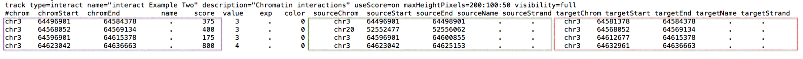
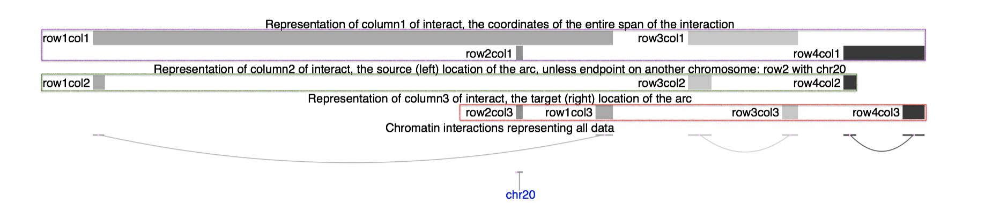

The interact (and bigInteract) track format displays pairwise interactions as arcs or half-rectangles connecting two genomic regions on the same chromosome. Cross-chromosomal interactions can also be represented in this format; the display shows the region on the currently viewed chromosome, with a vertical bar, labeled with the chromosome of the connected region (space permitting).
For directional interactions such as SNP/gene, the interactions in the reverse direction are displayed as a dashed line or curve. An alternative 'cluster' view can also be configured for directional interaction data. This view groups interactions by source or by target, producing a display of linked blocks.
This format is useful for displaying functional element interactions such as SNP/gene interactions, and is also suitable for low-density chromatin interactions, such as ChIA-PET, and other use cases with a limited number of interactions on the genome. It is not suitable for high-density chromatin data such as Hi-C.
The interact format is available as a standalone plain text bed5+13 format
for use with smaller datasets as a custom track, and as a binary indexed format (bigInteract)
suitable for track hubs and custom tracks.
The bigInteract format provides more track customization
features (i.e. schema customization), and
is recommended for users who can use command-line tools and have web-accessible data storage. If
you do not have web-accessible data storage, please see the
Hosting section of the Track Hub Help documentation.
Interact format files are converted to bigInteract files using the program
bedToBigBed, run with the -as option to pull in a special
autoSql (.as)
schema file defining the fields of the bigInteract.
The following autoSql definition illustrates the basic schema supporting interact (and bigInteract) tracks.
table interact
"interaction between two regions"
(
string chrom; "Chromosome (or contig, scaffold, etc.). For interchromosomal, use 2 records"
uint chromStart; "Start position of lower region. For interchromosomal, set to chromStart of this region"
uint chromEnd; "End position of upper region. For interchromosomal, set to chromEnd of this region"
string name; "Name of item, for display. Usually 'sourceName/targetName/exp' or empty"
uint score; "Score (0-1000)"
double value; "Strength of interaction or other data value. Typically basis for score"
string exp; "Experiment name (metadata for filtering). Use . if not applicable"
string color; "Item color. Specified as r,g,b or hexadecimal #RRGGBB or html color name, as in //www.w3.org/TR/css3-color/#html4. Use 0 and spectrum setting to shade by score"
string sourceChrom; "Chromosome of source region (directional) or lower region. For non-directional interchromosomal, chrom of this region."
uint sourceStart; "Start position in chromosome of source/lower/this region"
uint sourceEnd; "End position in chromosome of source/lower/this region"
string sourceName; "Identifier of source/lower/this region"
string sourceStrand; "Orientation of source/lower/this region: + or -. Use . if not applicable"
string targetChrom; "Chromosome of target region (directional) or upper region. For non-directional interchromosomal, chrom of other region"
uint targetStart; "Start position in chromosome of target/upper/this region"
uint targetEnd; "End position in chromosome of target/upper/this region"
string targetName; "Identifier of target/upper/this region"
string targetStrand; "Orientation of target/upper/this region: + or -. Use . if not applicable"
)
The first 5 fields of the interact format are the same as the first 5 fields of the standard BED format. See a graphical depiction below of the columns.
When creating bigInteract files, we encourage you to customize the title and field descriptions of the prototype autoSql schema to better describe your data. Customizing this file will make your data more easily interpreted by users, who will see the field descriptions when accessing the track data from the Table Browser, when viewing items on the Genome Browser details pages (via the "view table schema" link), and (for users who download files), from the -as option of the bigBedInfo tool.
As an example, if the dataset represents SNP/gene interactions, replace 'sourceName' and related fields with 'snpName', etc, and 'targetName' and related fields with 'geneName', etc., editing the field descriptions to reflect the changes you make. For non-directional data such as ChIA-PET, one could use 'region1' and 'region2'.
As the browser display of this format only shows the paired region labels on mouseover, we recommend including a BED or other format file to display the source and target region labels.
In this example, you will create an interact custom track using example SNP/gene interaction data in multiple tissues. This example uses the interaction coloring and directionality features of the interact track type.
track type=interact name="interact Example One" description="An interact file" interactDirectional=true maxHeightPixels=200:100:50 visibility=full
browser position chr12:40,560,500-40,660,499
#chrom chromStart chromEnd name score value exp color sourceChrom sourceStart sourceEnd sourceName sourceStrand targetChrom targetStart targetEnd targetName targetStrand
chr12 40572709 40618813 rs7974522/LRRK2/muscleSkeletal 0 0.624 muscleSkeletal #7A67EE chr12 40572709 40572710 rs7974522 . chr12 40618812 40618813 LRRK2 +
chr12 40579899 40618813 rs17461492/LRRK2/muscleSkeletal 0 0.624 muscleSkeletal #7A67EE chr12 40579899 40579900 rs17461492 . chr12 40618812 40618813 LRRK2 +
chr12 40614433 40618813 rs76904798/LRRK2/nerveTibial 0 0.625 nerveTibial #FFD700 chr12 40614433 40614434 rs76904798 . chr12 40618812 40618813 LRRK2 +
chr12 40618812 40652520 rs2723264/LRRK2/lung 0 1.839 lung #9ACD32 chr12 40652519 40652520 rs2723264 . chr12 40618812 40618813 LRRK2 +
After the file loads in the Genome Browser, you should see four interactions displayed;
four variants interacting with the same gene (LRRK2).
Hovering the mouse over the curve peak of an interaction will display the interaction name
(SNP/gene/tissue).
Hovering over an interaction end will show the name of the end region (e.g. SNP or gene).
Clicking at one of the hoverable regions will show the details page for the interaction.
The interactDirectional setting causes reverse direction interactions (where
target precedes source) to be displayed as dashed lines. In this example, the green (lung)
interaction is in the reverse direction.
In this example, you will create an interact custom track using example chromatin interaction data. This type of data is non-directional and commonly would represent a single experiment, with the interaction score being of interest. The settings below display using the gray-scale coloring feature, where the darkness of the interaction is based on the score.
track type=interact name="interact Example Two" description="Chromatin interactions" useScore=on maxHeightPixels=200:100:50 visibility=full
browser position chr3:64,562,440-64,642,288
chr3 64496901 64584378 . 375 3 . 0 chr3 64496901 64498901 . . chr3 64581378 64584378 . .
chr3 64568052 64569134 . 400 3 . 0 chr20 52552477 52556062 . . chr3 64568052 64569134 . .
chr3 64596901 64615378 . 175 3 . 0 chr3 64596901 64600855 . . chr3 64612677 64615378 . .
chr3 64623042 64636663 . 800 4 . 0 chr3 64623042 64625153 . . chr3 64632961 64636663 . .
After the file loads in the Genome Browser, you should see four interactions displayed on chromosome 3. Two of the interactions have both interacting regions in the browser view, and two have a single region. One of these interacts across chromosomes (with a region on chromosome 20), and the other with a region outside of the browser window (indicated by rectangular connector). The darkness of the interaction indicates the strength of the interaction. Also see the graphical representation of each column of this example data below.
In this example, you will create a bigInteract track out of an existing bigInteract format file,
located on the UCSC Genome Browser http server. This file contains data for the hg19 assembly.
This example also contains the interactUp=true setting to flip the arcs of the interact display.
To create a custom track using this file:
track type=bigInteract interactUp=true name="interact Example Three" description="A bigInteract file" useScore=on visibility=full bigDataUrl=http://genome.ucsc.edu/goldenPath/help/examples/interact/interactExample3.inter.bb
browser position chr3:63,820,967-63,880,091
After the file loads in the Genome Browser, you should see a number of interactions, all arching as hills instead of valleys, with some curved and many rectangular indicating a connector to a region outside of the browser window. Press the 10x zoom out button to see the full connections.
In this example, you will use an example BED file to create a bigInteract file, allowing the data to be remotely accessed and exist within a track hub. The track settings for bigInteract on a hub can be viewed here.
bedToBigBed -as=interact.as -type=bed5+13 interactExample4.inter.bed hg19.chrom.sizes interactExample4.inter.bb
track type=bigInteract name="interact Example Four" description="A bigInteract file" useScore=on bigDataUrl=/interactExample4.inter.bb visibility=pack
browser position chr3:63,820,967-63,880,091
track exampleInteractTrack
type bigInteract
visibility full
shortLabel exInteract
longLabel Example interact track
spectrum on
scoreMin 175
maxHeightPixels 300:150:20
bigDataUrl interactExample4.inter.bb
This graphic represents the data in Example #2 with boxes around columns of data, separately illustrated as individual custom tracks in the lower image.
The interact file format has 18 fields where the first 5 fields (box column1) are standard BED format fields, which define the span of the interaction to be viewed on a chromosome. In the below image, see the representation of box column1 and how it spans the length of each arc. Next, there are 3 fields for value, exp, and color before two sets of 5 fields that specify the coordinates, name, and strand of the source (box column2) and target (box column3) data, defining the endpoints of each interact arc. In the below image, the box column2 represents the left foot of each arc while the box column3 represents the right foot of each arc. The second row of the example data denotes an interaction to another chromosome, chr20, and thus is not represented by an arc.
If you would like to share your interact/bigInteract data track with a colleague, learn how to create a URL by looking at Example 6 on this page.
Because bigInteract files are an extension of bigBed files, which are indexed binary files, it can be difficult to extract data from them. UCSC has developed the following programs to assist in working with bigBed formats, available from the binary utilities directory.
bigBedToBed — converts a bigBed file to ASCII BED format.bigBedSummary — extracts summary information from a bigBed file.bigBedInfo — prints out information about a bigBed file. Use the -as option to see the file field descriptions.As with all UCSC Genome Browser programs, one can type the program name (with no parameters) at the command line to view the usage statement.
If you encounter an error when you run the bedToBigBed program, check your input
file for data coordinates that extend past the end of the chromosome. If these are present, run
the bedClip program
(available here) to remove the problematic
row(s) in your input file before running the bedToBigBed program.